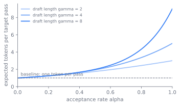
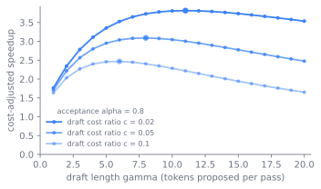

flowchart LR
A[context] --> D["draft: propose gamma tokens"]
D --> V["target: score all positions in one pass"]
V --> R{"accept under p over q?"}
R -->|accept run| O["emit accepted tokens"]
R -->|first reject| C["resample from residual p minus q"]
C --> O
O --> A
18 Faster Decoding
A frontier model running at batch size one spends most of its time waiting. To produce a single token it streams every weight from high-bandwidth memory into the accelerator’s compute units, multiplies once, and discards them. The matrix multiplications are skinny, a vector against each weight matrix, so the chip finishes the math long before the next slab of weights arrives, then sits idle waiting on memory. sec-serving-problem and sec-memory-scheduling establish this wall from the serving side: decode is memory-bound, its arithmetic intensity far below what the hardware can sustain. This chapter is about the family of methods that fill that idle time, breaking the one-token-per-pass rule by spending parallel compute the hardware was already wasting. By the end a reader can explain why speculative decoding loses no quality, how Medusa, Hydra, the EAGLE line, lookahead decoding, and multi-token prediction each produce their guesses, and why the speedups they quote hold in one serving regime and evaporate in another.
18.1 One trick, stated once
Autoregressive generation has a sequential bottleneck that looks fundamental: decoding \(K\) tokens takes \(K\) forward passes, each waiting on the one before it. The bottleneck bites hardest exactly where latency is felt most. Reasoning models from sec-inference-time-scaling emit long chains of intermediate tokens before an answer, so wall-clock latency is dominated by the sheer count of sequential decode steps.
The single idea behind everything in this chapter is to trade extra parallel compute for fewer sequential steps. A cheap process guesses several future tokens, the expensive model checks all of them in one forward pass, and every guess that survives the check is a token produced without its own sequential step. Because a forward pass over \(\gamma\) candidate tokens costs almost the same as a pass over one, the spare compute is nearly free.
Two quantities govern the payoff. The acceptance rate \(\alpha\) is the fraction of draft tokens the target keeps; the draft cost is how much cheaper the guesser is than the target. The expected number of tokens produced per target pass rises with \(\alpha\), so the whole game is to make the draft both cheap and well aligned with the target, and to verify many candidates at once. Two questions organize the rest of the chapter. Where does the guess come from, and how does the check stay correct.
Figure fig-18-faster-decoding-1 makes the payoff concrete. With acceptance rate \(\alpha\) and a draft of \(\gamma\) tokens checked in one pass, the expected tokens emitted per target pass is the geometric sum \((1 - \alpha^{\gamma+1}) / (1 - \alpha)\), rising from one when nothing is accepted toward \(\gamma + 1\) when everything is. A longer draft helps only when \(\alpha\) is high, because an early rejection wastes the whole tail.

18.2 Keeping the check exact
The decisive design choice is how the verification preserves correctness, and the answer that made the method safe to deploy is that it can be made exact. Speculative decoding, introduced independently by Leviathan et al. (Leviathan et al. 2023) and Chen et al. (Chen et al. 2023), guarantees this. A small draft model proposes a continuation of \(\gamma\) tokens. The target model scores all \(\gamma\) positions in one parallel pass, yielding its own distribution \(p\) at each position alongside the draft’s distribution \(q\). A modified rejection sampling rule then accepts or rejects each draft token left to right: token \(x\) proposed from \(q\) is accepted with probability \(\min(1, p(x)/q(x))\), and on the first rejection a corrected token is resampled from the residual distribution \(\max(0, p - q)\), renormalized. The theorem behind the rule is that the accepted stream is distributed exactly as if it had been sampled from \(p\) token by token (Leviathan et al. 2023). The speedup is real and the output distribution is untouched. The method is not an approximation of the model, it is the same model sampled in a different order.
Figure fig-faster-decoding-spec-loop draws this loop. The line of accept/reject decisions it shows is the simplest case, a single linear continuation. The self-draft methods below replace that line with a tree.
18.3 The search for the guess
The lineage of these methods is best read as a search for where the guess comes from, moving from a separate model toward parts of the target itself, and finally into how the target is trained.
18.3.1 A second, smaller model
The first answer was a second, smaller model. Leviathan et al. and Chen et al. both used an off-the-shelf draft model from the same family as the target, for example a small Chinchilla drafting for a 70B Chinchilla (Chen et al. 2023). This needs no change to the target and is provably lossless, but it requires training, hosting, and aligning a second model, and a poorly matched draft has a low acceptance rate.
18.3.2 Heads on the target itself
Medusa (Cai et al. 2024) removed the separate model. Instead of a draft network it bolts several lightweight decoding heads onto the target’s last hidden state, each head predicting one further future token in parallel. The candidates the heads produce form a tree, and a tree-structured attention mask lets the target verify many branches of that tree in a single pass rather than a single linear continuation. Medusa’s heads predict each future token independently of the others, which caps how coherent a multi-token guess can be. It also offers a typical-acceptance scheme that relaxes exact sampling for more speed, so Medusa in that mode is deliberately not distribution-preserving, a different bargain from speculative decoding’s exactness (Cai et al. 2024).
Hydra (Ankner et al. 2024) fixed the independence limitation. Its draft heads are sequentially dependent: the head predicting the third token sees what the second head proposed, so the multi-token guess is internally coherent and the acceptance rate rises. The EAGLE line pushed further on what the draft should predict. EAGLE (Li et al. 2024a) observed that autoregression is more regular at the feature level, the second-to-top-layer hidden state, than at the token level, so it drafts by predicting the next feature and then mapping it to a token, resolving the uncertainty by feeding in the token already sampled one step ahead. EAGLE-2 (Li et al. 2024b) made the verification tree dynamic: because a draft token’s acceptance depends on context and not only on its position, it expands the draft tree where the draft is confident and prunes it where it is not. EAGLE-3 (Li et al. 2025) abandoned feature prediction in favor of direct token prediction over a fusion of low, middle, and high layers, trained with a procedure the authors call training-time test, which lets the drafter keep improving as its training data grows.
18.3.3 No draft at all
A parallel branch removed the draft entirely. Lookahead decoding (Fu et al. 2024) reframes autoregressive generation as solving a nonlinear system by Jacobi iteration, updating a whole window of future positions at once and collecting the n-grams that the iteration produces along the way. A verification branch then checks those n-grams against the target in the same step. There is no draft model and no extra trained heads; the parallelism comes from the fixed-point structure of the problem, and the method is exact.
18.3.4 Training the guess in
The last move folds the guess into training. Multi-token prediction (Gloeckle et al. 2024) trains the base model with several output heads on a shared trunk so that each position predicts the next \(n\) tokens at once. The authors found this improves sample efficiency as an auxiliary objective, and crucially the extra heads double as a built-in drafter at inference time. DeepSeek-V3 (DeepSeek-AI 2024) carries this into a frontier system: its MTP module is trained alongside the main model and then reused for speculative decoding, reported to accept its second predicted token 80% to 90% of the time and to raise generation throughput by roughly 1.8 times.
flowchart TD S["separate draft model<br/>Leviathan, Chen"] --> H["self-draft heads<br/>Medusa, Hydra"] H --> E["feature and token drafting<br/>EAGLE 1/2/3"] S --> J["draft-free Jacobi iteration<br/>lookahead"] H --> M["train the draft in<br/>multi-token prediction, DeepSeek-V3"] E --> M
Figure fig-faster-decoding-lineage traces that search.
18.4 When the speedup is real
Every method here buys fewer sequential steps with more parallel compute and more memory traffic for verification. The boundaries are where that trade stops paying, and the sharpest of them is set by the serving regime rather than the method.
Figure fig-faster-decoding-regime shows why the same method can help or hurt. At small batch the accelerator’s compute units sit idle waiting on weights, so the FLOPs speculation spends to verify candidates were going to waste anyway, and they are free. At large batch the weights are amortized across many sequences and the compute units are already saturated, so verifying tokens that then get rejected competes with real work for FLOPs and can lower total throughput. The premise of the whole chapter, that decode is memory-bound, holds only in the small-batch regime.
flowchart TB
subgraph L["small batch: memory-bound"]
direction TB
L1["compute units idle, waiting on weights"] --> L2["spare FLOPs available"]
L2 --> L3["verify candidates for free"]
L3 --> L4["fewer sequential steps, speculation wins"]
end
subgraph R["large batch: compute-bound"]
direction TB
R1["weights amortized across many sequences"] --> R2["compute units saturated"]
R2 --> R3["rejected tokens still consume FLOPs"]
R3 --> R4["verification competes with real work, can lose"]
end
Three further trades sit underneath this one, and they are worth naming because they explain why the lineage moved the way it did.
- Acceptance versus draft cost. A larger or better-trained drafter raises the acceptance rate but costs more per proposal. The optimal draft is the cheapest one whose acceptance is high enough that the saved target passes outweigh the draft’s own cost. This is why self-draft heads and feature-level drafting won out: they are nearly free yet aligned with the target. Figure fig-18-faster-decoding-2 shows the optimum this implies: as the draft grows longer the cost-adjusted speedup rises, peaks, then falls, because past some length the extra verification work outweighs the tokens it wins back, and a cheaper drafter pushes that peak to longer drafts.
- Tree width versus waste. Verifying a wider tree of candidates accepts more tokens per pass but burns compute on branches that will be rejected. Dynamic trees, as in EAGLE-2, exist to spend that width only where the draft is confident.

- Lossless versus lossy. Speculative decoding, lookahead, and the EAGLE line preserve the target’s output distribution exactly. Medusa’s typical-acceptance mode trades that exactness for speed. Multi-token prediction changes training, not the sampling guarantee. Whether a lossy shortcut is acceptable is an application decision, not a free lunch.
ImportantWhat’s contested
The speedups quoted across this literature, the 2 to 3 times of the original speculative decoding, the 3 to 4 times of EAGLE-2 (Li et al. 2024b), the larger figures of EAGLE-3 (Li et al. 2025), are measured at small batch sizes where serving is latency-bound and the accelerator’s compute genuinely sits idle. They are not comparable across papers, because each uses different baselines, hardware, and tasks, and they do not transfer to every deployment. As batch size grows, a server becomes compute-bound rather than memory-bound: the spare FLOPs that speculation spends are no longer free, and verifying tokens that then get rejected can lower total throughput. Whether speculative decoding pays in high-throughput production serving, as opposed to low-latency single-stream use, is a live question. So is the choice among separate-draft, self-draft, and draft-free designs, which trade hosting cost, training cost, and acceptance differently with no settled winner. Treat any single speedup number as a property of a serving regime, not of the method.
TipConstraint arrow
This whole chapter is a lower layer reaching up to dictate an algorithm. The memory-bandwidth wall of sec-serving-problem and sec-memory-scheduling, where single-stream decode reloads every weight per token and leaves the compute units idle, is what makes “spend parallel compute to save sequential steps” worthwhile in the first place. If decode were compute-bound there would be no idle FLOPs to spend and none of these methods would help. The shape of the decode algorithm is set by the bandwidth-to-compute ratio of the chip below it.
18.5 Inside the verification step
The verification step is the part worth seeing concretely, because it is where correctness lives. Given draft tokens \(x_1, \dots, x_\gamma\) from \(q\) and the target’s distributions \(p_1, \dots, p_{\gamma}\) from one parallel pass, the accept loop is short:
for i in range(gamma):
r = uniform(0, 1)
if r < min(1, p[i][x[i]] / q[i][x[i]]):
emit(x[i]) # accepted, no extra target step
else:
emit(sample(normalize(relu(p[i] - q[i])))) # corrected token
break # stop at first rejection
# if all gamma accepted, sample one bonus token from p[gamma]The two details that make it exact are the residual \(\max(0, p - q)\) resampling on rejection and the bonus token after a full-accept run; together they are what the distribution-preservation theorem requires. For the self-draft and tree-based methods, the same accept logic runs over a tree rather than a line: a tree attention mask lets the single target pass score every branch, and the longest accepted path through the tree is emitted. Figure fig-faster-decoding-tree shows why this beats a linear draft. A linear draft commits to one continuation, so a single early rejection wastes everything after it. A tree hedges across several continuations at each position, and the tree attention mask scores all of them in the one target pass for almost the cost of one. The target then emits the longest path whose every token was accepted.
Operationally, serving stacks expose this as a drafter choice. A separate draft model is a second checkpoint to load and schedule. EAGLE-style and Medusa-style drafters are small head modules trained against a frozen target and loaded beside it. Multi-token-prediction drafting, as in DeepSeek-V3, needs no separate artifact at all because the heads were trained into the model. The practical failure mode is a drafter whose acceptance rate is too low for the workload, at which point speculation adds latency instead of removing it, which is why acceptance rate is the metric to watch in production rather than the headline speedup from a paper.
18.6 Further reading
- Leviathan, Kalman & Matias, “Fast Inference from Transformers via Speculative Decoding,” 2023. arXiv:2211.17192
- Chen et al., “Accelerating Large Language Model Decoding with Speculative Sampling,” 2023. arXiv:2302.01318
- Cai et al., “Medusa: Simple LLM Inference Acceleration Framework with Multiple Decoding Heads,” 2024. arXiv:2401.10774
- Ankner et al., “Hydra: Sequentially-Dependent Draft Heads for Medusa Decoding,” 2024. arXiv:2402.05109
- Li et al., “EAGLE: Speculative Sampling Requires Rethinking Feature Uncertainty,” 2024. arXiv:2401.15077
- Li et al., “EAGLE-2: Faster Inference of Language Models with Dynamic Draft Trees,” 2024. arXiv:2406.16858
- Li et al., “EAGLE-3: Scaling up Inference Acceleration of Large Language Models via Training-Time Test,” 2025. arXiv:2503.01840
- Fu et al., “Break the Sequential Dependency of LLM Inference Using Lookahead Decoding,” 2024. arXiv:2402.02057
- Gloeckle et al., “Better & Faster Large Language Models via Multi-token Prediction,” 2024. arXiv:2404.19737
- DeepSeek-AI, “DeepSeek-V3 Technical Report” (multi-token prediction reused for speculative decoding), 2024. arXiv:2412.19437
Ankner, Zachary, Rishab Parthasarathy, Aniruddha Nrusimha, Christopher Rinard, Jonathan Ragan-Kelley, and William Brandon. 2024. Hydra: Sequentially-Dependent Draft Heads for Medusa Decoding. https://arxiv.org/abs/2402.05109.
Cai, Tianle, Yuhong Li, Zhengyang Geng, et al. 2024. Medusa: Simple LLM Inference Acceleration Framework with Multiple Decoding Heads. https://arxiv.org/abs/2401.10774.
Chen, Charlie, Sebastian Borgeaud, Geoffrey Irving, Jean-Baptiste Lespiau, Laurent Sifre, and John Jumper. 2023. Accelerating Large Language Model Decoding with Speculative Sampling. https://arxiv.org/abs/2302.01318.
DeepSeek-AI. 2024. DeepSeek-V3 Technical Report. https://arxiv.org/abs/2412.19437.
Fu, Yichao, Peter Bailis, Ion Stoica, and Hao Zhang. 2024. Break the Sequential Dependency of LLM Inference Using Lookahead Decoding. https://arxiv.org/abs/2402.02057.
Gloeckle, Fabian, Badr Youbi Idrissi, Baptiste Rozière, David Lopez-Paz, and Gabriel Synnaeve. 2024. Better & Faster Large Language Models via Multi-Token Prediction. https://arxiv.org/abs/2404.19737.
Leviathan, Yaniv, Matan Kalman, and Yossi Matias. 2023. Fast Inference from Transformers via Speculative Decoding. https://arxiv.org/abs/2211.17192.
Li, Yuhui, Fangyun Wei, Chao Zhang, and Hongyang Zhang. 2024a. EAGLE: Speculative Sampling Requires Rethinking Feature Uncertainty. https://arxiv.org/abs/2401.15077.
Li, Yuhui, Fangyun Wei, Chao Zhang, and Hongyang Zhang. 2024b. EAGLE-2: Faster Inference of Language Models with Dynamic Draft Trees. https://arxiv.org/abs/2406.16858.
Li, Yuhui, Fangyun Wei, Chao Zhang, and Hongyang Zhang. 2025. EAGLE-3: Scaling up Inference Acceleration of Large Language Models via Training-Time Test. https://arxiv.org/abs/2503.01840.